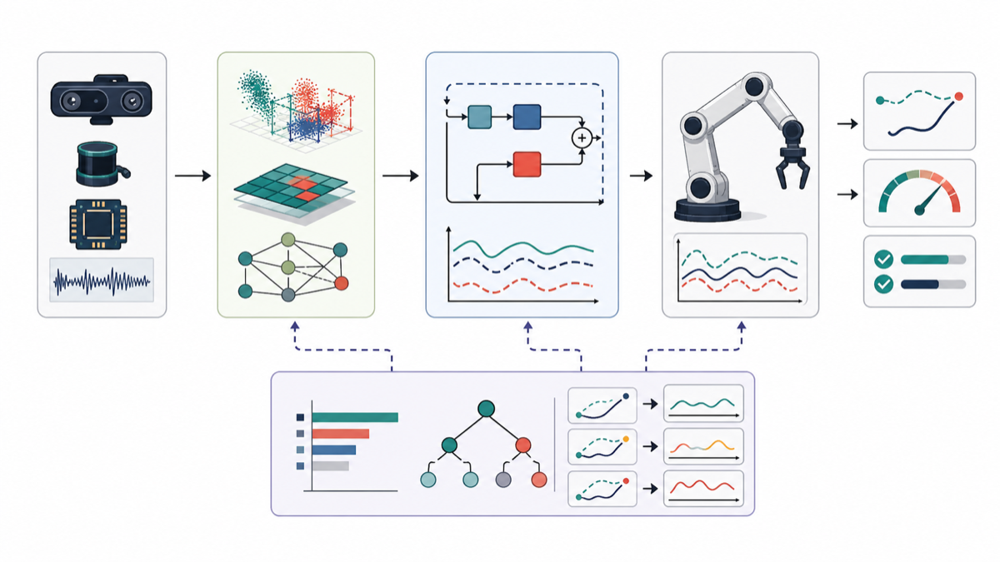
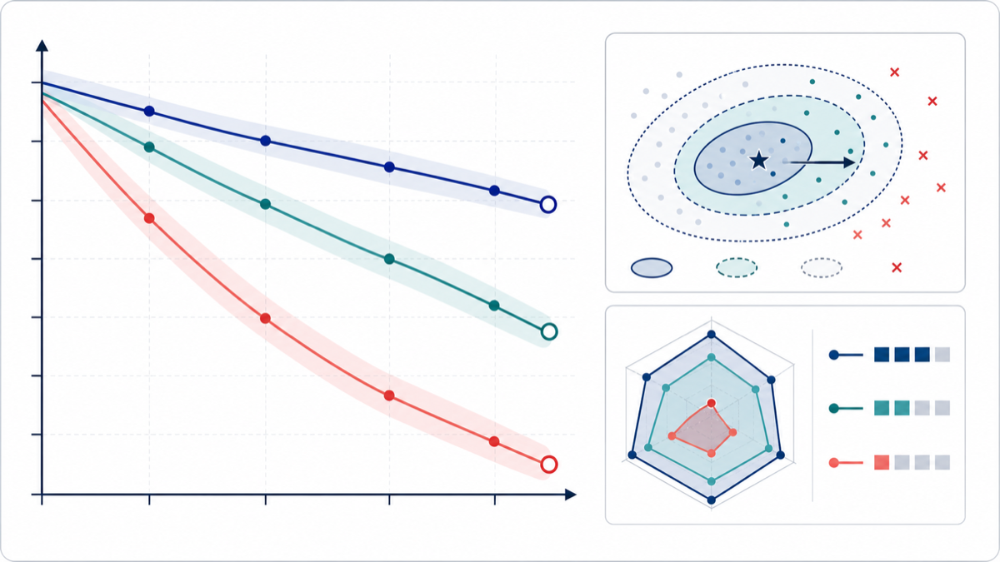

Current issue | 2026 Volume 31 Number 2
IJICS
The International Journal of Intelligent Control and Systems. Current articles, journal information, author guidance, and submission routes in one place.
Current issue | 2026 Volume 31 Number 2
The International Journal of Intelligent Control and Systems. Current articles, journal information, author guidance, and submission routes in one place.
Call for Papers
Special Issue Editors: Jing Zhao, Jinwu Gao, Yuhu Wu, Lingxi Li, Xiaoxiang Na.
Author Resources
Authors submit through the IJICS login page, use Word or LaTeX templates, and can contact the Editorial Office by email for submission status.
Current issue

Editorial

Editorial

Editorial
Research Article

Research Article

Research Article

Research Article

Communications and Letters
Submission Scope
...
Call for Papers
Special Issue Editors: Jing Zhao, Jinwu Gao, Yuhu Wu, Lingxi Li, Xiaoxiang Na.

Special Issue Editors: Mengzhen Kang, Marc Jaeger, Xiujuan Wang.

Special Issue Editors: Fuchun Sun, Dayi Wang, Hui Zhang.
News
Read the issue contents and open each article from the official issue page.
View more